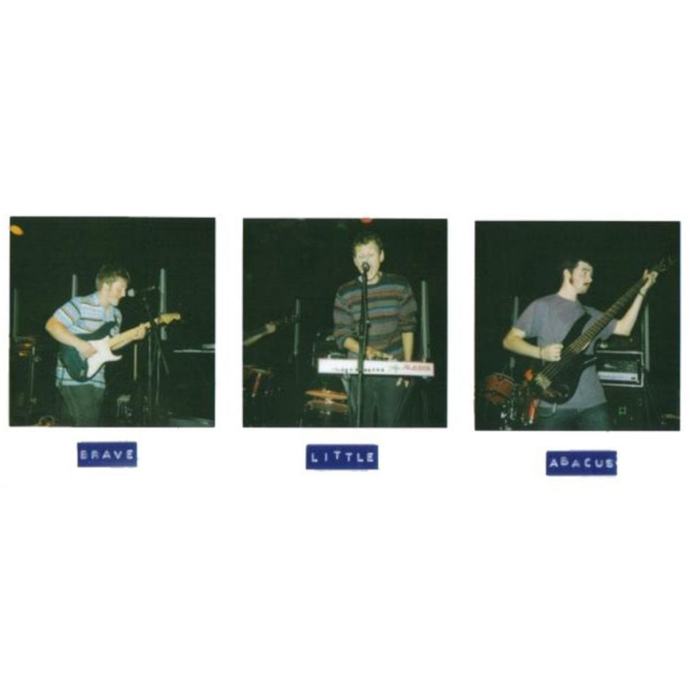
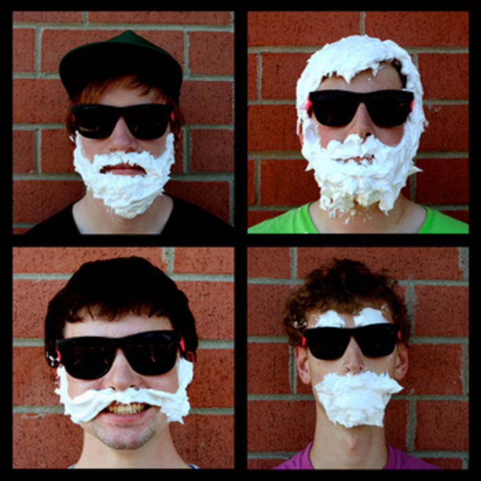
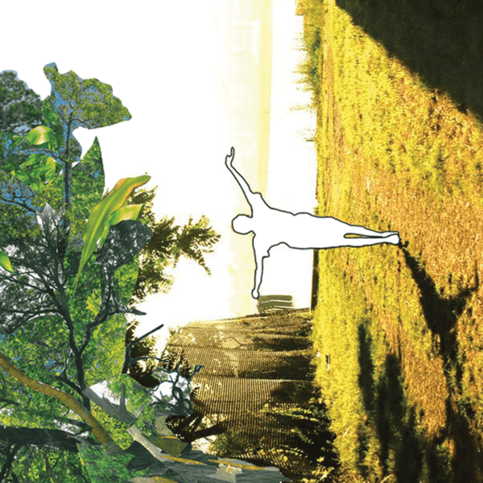
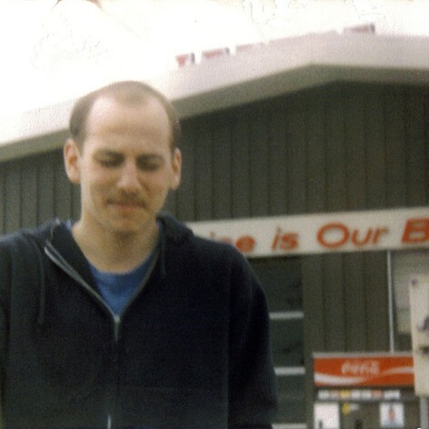
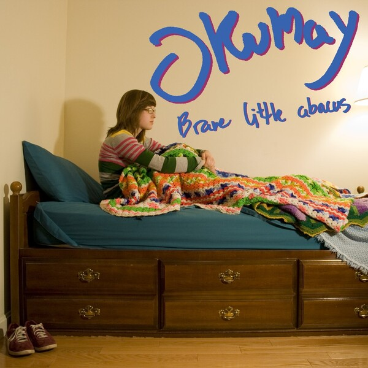
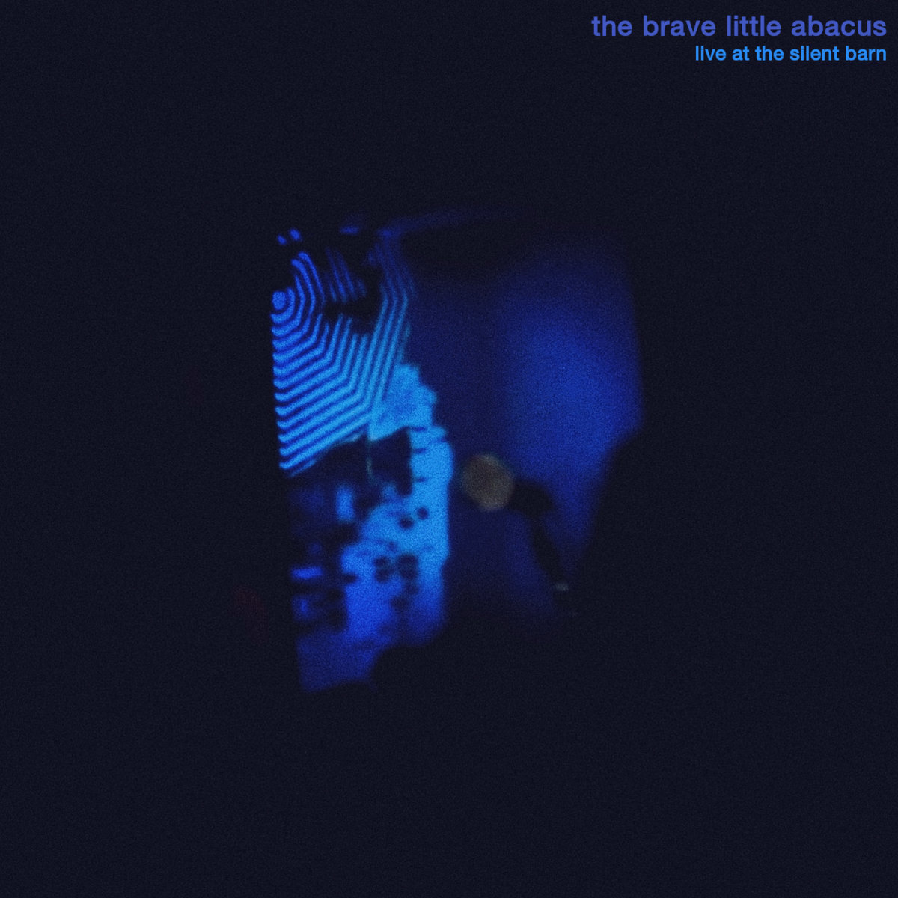
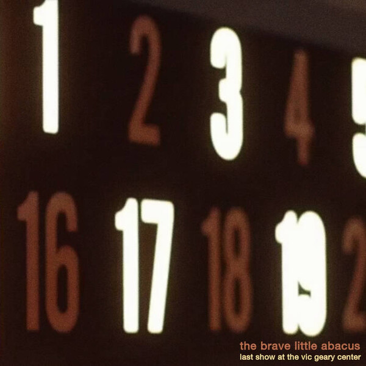
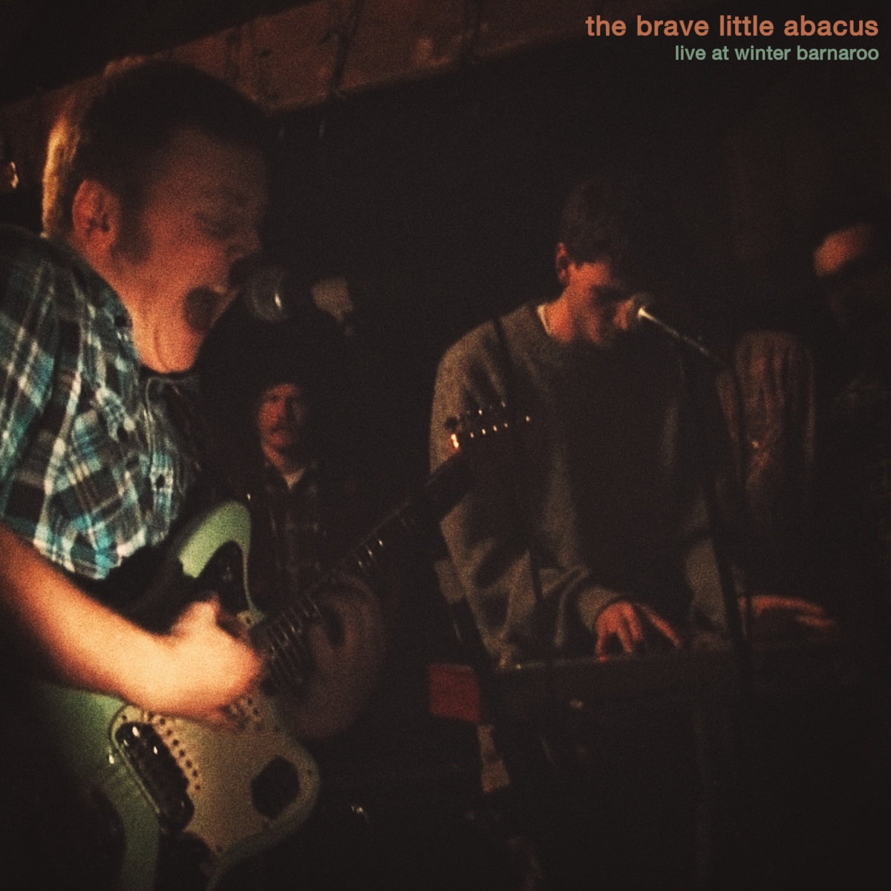

Discography
A comprehensive list of The Brave Little Abacus releases, including studio albums, eps, and other recordings produced during the band’s active years.
Official Discography (2008 - 2012)
List of all official releases in chronological order.

Demo?
- Format: EP
- Released: March 1, 2008
- Label: N/A
Tracklist:
- The Buffalo 4:53
- You're Not Me But Neither Am I 4:21
- Imaginary Peaks, Imaginary Beasts 7:21
- El Capitano 4:41
Listen

Matt Aspinwall / The Brave Little Abacus
- Format: Split
- Released: August 1, 2008
- Label: N/A
Tracklist:
- Matt Aspinwall - I 3:18
- Matt Aspinwall - II 3:15
- Matt Aspinwall - III 5:32
- Matt Aspinwall - IV 3:16
- Matt Aspinwall - V 5:07
- The Brave Little Abacus - Sol 5:38
- The Brave Little Abacus - (Yes, He Did Help Overthrow Fulgencio Batista, But,) Che Guevara Didn't Wear His Own T-Shirts 5:19
- The Brave Little Abacus - Good Atmosphere 5:41
- The Brave Little Abacus - [untitled] 7:22
- The Brave Little Abacus - El Capitano (Different Mix) 4:52
Listen

Masked Dancers: Concern in So Many Things You Forget Where You Are
- Format: Album
- Released: August 1, 2009
- Label: N/A
Tracklist:
- I See It Too 9:50
- "But I Won't Always Be on the Receiving End!" 1:08
- A Map of the Stars 3:53
- Waiting for Your Return, Like Running Backwards 1:02
- Through Hallways 3:20
- "He Never Existed in the First Place" 3:55
- Born Again So Many Times You Forget You Are 10:08
- Underground 8:35
- Remember to Wave (When Looking Down From the Clouds) 3:37
- It's a Lot. It's Seamless. 4:00
Listen

Just Got Back From the Discomfort We're Alright
- Format: Album
- Released: May 29, 2010
- Label: N/A
Tracklist:
- Pile! No Pile! Pile! 6:22
- Please Don't Cry, They Stopped Hours Ago. 4:42
- Boy's Theme 2:48
- A Highway Got Paved Over My Future, I Drive It Getting to School. 2:34
- The Blah Blah Blahs 4:14
- Can't Run Away 6:30
- Untitled (Cont.) 3:40
- Aubade (Morning Love Song) 2:13
- It's Not What You Think It Is 3:39
- Allston, Massachusetts December 2009-January 2010 1:20
- Bug-Infested Floorboards - Can We Please Just Leave This Place, Now. 4:38
- Orange, Blue With Stripes 2:13
Listen

Okumay
- Format: EP
- Released: January 27, 2012
- Label: Cat Dead, Details Later & Quote Unquote Records
Tracklist:
- For GeOn (For Colin) 2:31
- 45 Minutes From "Somewhere Out There" 4:35
- Don't Come Around Here No More (Please) 4:51
- Introducing Morrissey ["The Ergs!" Cover] 2:51
- *"Introducing Morrissey" added in later February 15, 2012 reissue.
Listen
Bootleg / Unauthorized
List of unofficial releases, primarily live recordings not formally issued.
The Brave Little Abacus' Last Show on Earth
- Released: February 27, 2012
- Recorded: January 28, 2012
Tracklist:
- El Capitano 5:06
- (Yes, He Did Help Overthrow Fulgencio Batista, But,) Che Guevara Didn't Wear His Own T-Shirts 5:36
- A Map of the Stars 6:44
- For GeOn (For Colin) 7:01
Listen

Live at the Silent Barn 01/09/2011
- Released: June 3, 2012
- Recorded: January 9, 2012
Tracklist:
- 45 Minutes From "Somewhere Out There" 4:44
- Break 1 2:51
- For GeOn 2:43
- Break 2 1:20
- Careful [Paramore Cover] 3:42
- Break 3 3:55
- [untitled] 7:51
Listen

Last Show at the Vic Geary Center
- Released: July 9, 2019
- Recorded: January 28, 2012
Tracklist:
- Intro 0:11
- El Capitano 4:10
- (Yes, He Did Help Overthrow Fulgencio Batista, But) Che Guevara Didn’t Wear His Own T-Shirts 5:39
- Map of the Stars 4:05
- For GeOn (For Colin) 2:32
- 45 Minutes From Somewhere Out There 4:24
- Bug-Infested Floorboards—Can We Please Just Leave This Place, Now 4:16
- The Blah Blah Blahs 3:49
- Pile! No Pile! Pile! 5:13
- American Girl [Tom Petty and the Heartbreakers Cover] 4:08
- I See It Too. 8:39
- Interlude—Secret Plans, Unresolved Cinematicities 2:55
- Introducing Morrissey ["The Ergs!" Cover] 3:07
Listen

Live at Winter Barnaroo
- Released: July 11, 2019
- Recorded: January 23, 2010
Tracklist:
- Santa (Hell Yeah) 0:35
- Don't Come Around Here No More (Please) (Ending) 1:16
- 45 Minutes From Somewhere Out There 4:24
- Speech (Thank You) 1:11
- Careful [Paramore Cover] 3:36
- Speech (Hard Work, Charity) 1:45
- [untitled] 7:33
Listen
VHS Recordings (2.20.10—6.26.10)
- Released: June 4, 2020
- Recorded: February 20, 2010 - June 26, 2010
Tracklist:
- Can't Run Away (2.20.2010 Allston, MA) 4:23
- Orange, Blue With Stripes (6.26.10 Hopscotchoria) 2:14
- Pile! No Pile! Pile! (6.26.10 Hopscotchoria) 5:53
- You're Not Me But Neither Am I (2.27.10 Plaistow, NH) 3:20
- Chopsticks (2.20.10 Allston, MA) 2:39
- Allston, Massachusetts December 2009—January 2010 / Bug-Infested Floorboards—Can We Please Just Leave This Place, Now. (6.26.20 Hopscotchoria) 6:06
- Eliot Pt. II (2.20.10 Allston, MA) 2:12